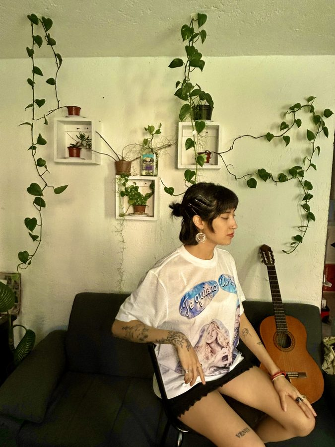
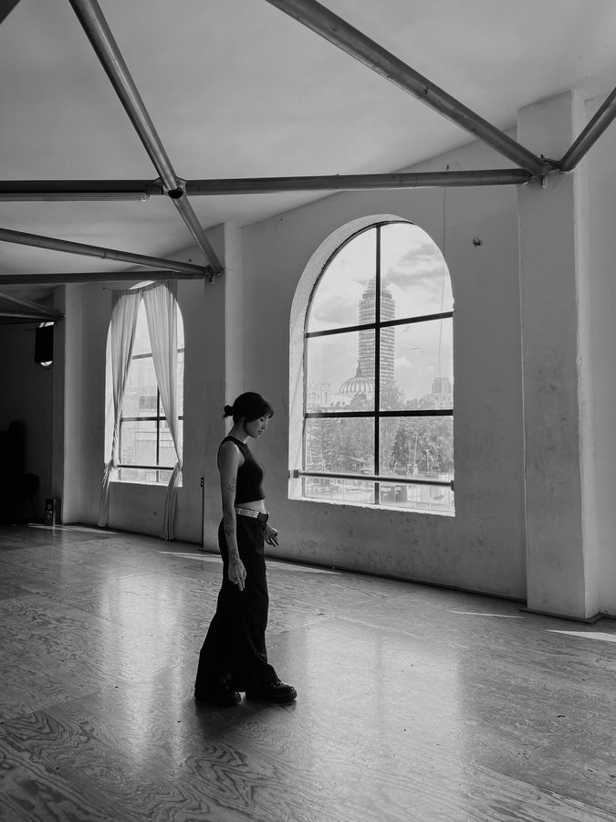
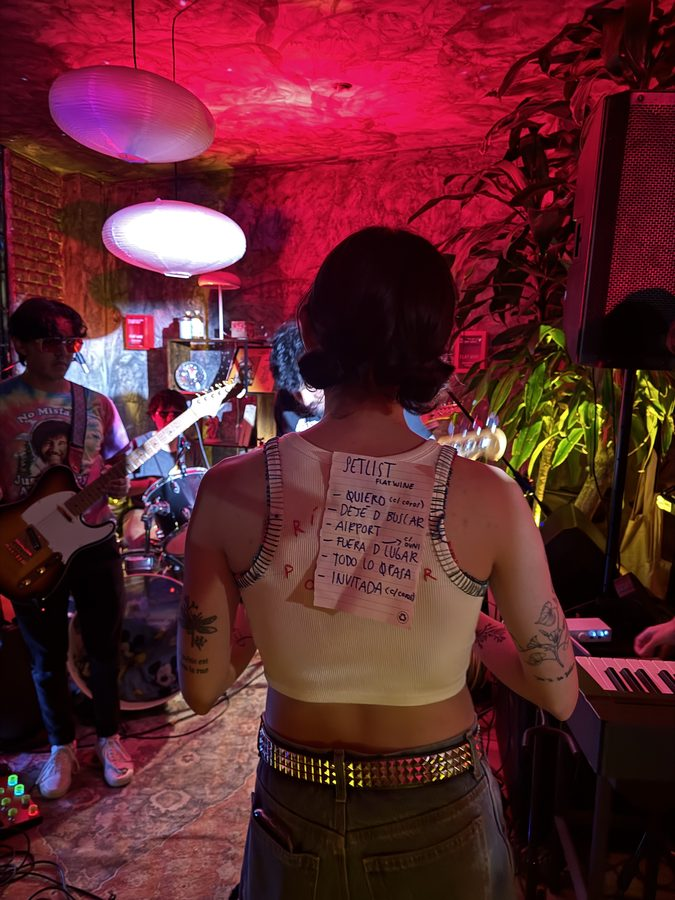
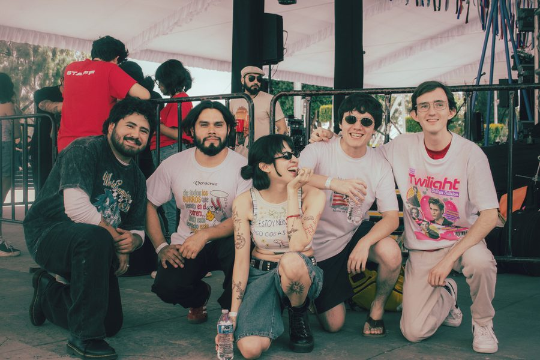
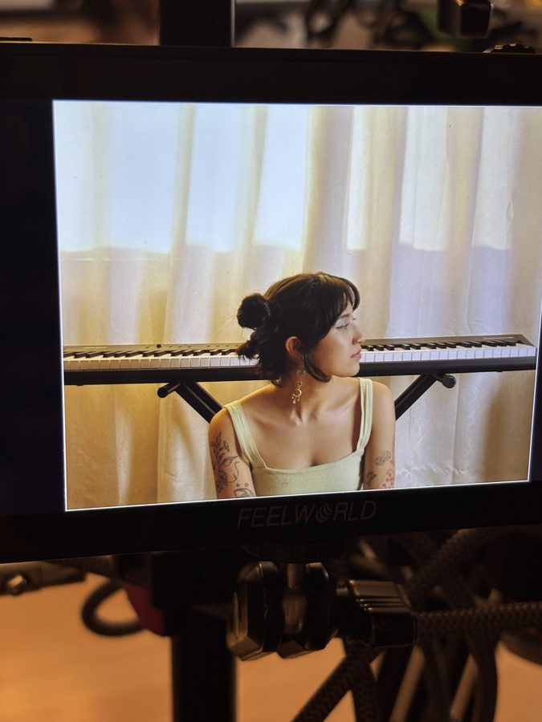

Una pequeña introducción a mi proyecto: quién soy, qué hago y cómo ha ido creciendo este proyecto.





Discografía

-
Escuchar en SpotifyPlay
La Invitada de la Temporada
-
Escuchar en SpotifyPlay
Fallin'
-
Escuchar en SpotifyPlay
Quiero
-
Escuchar en SpotifyPlay
A Song I Wrote About U at the Airport Lol